Defence of the North
CROSSING OF THE RIVER CARNEN
LAYOUT
The board represents the River Carnen and the surrounding area. There should be a 6" wide river running through the centre of the board from north to south. In the centre of the board, there should be a ford that is at least 6" wide that crosses the river, allowing for an easy place for the forces to cross. The rest of the board should be relatively barren and dotted with the odd tree, bush, and hedge.
STARTING POSITIONS
The Good player deploys their forces within 12" of the western board edge. The Evil player then deploys their force within 12" of the eastern board edge.
OBJECTIVES
Brand has come to the banks of the River Carnen to negotiate with the Easterlings; however, Sauron's army will not be dissuaded and is intent on crossing the river and marching to war.
The game lasts for 10 turns. The Evil player wins if at least 33% of their models have reached the western side of the river by the end of the game. The Good player wins if they can prevent this. Additionally, if Brand is slain, the best result the Good player can achieve is a draw.
SPECIAL RULES
- The River
The River counts as Deep Water.
- Onwards to Erebor!
Easterling models may re-roll failed To Wound rolls in the Fight phase.
PARTICIPANTS
Good: Brand, King of Dale; Captain of Dale with shield; 20 Warriors of Dale: 6 with shield, 8 with spear and shield, 6 with Esgaroth bow.
Evil: Rutabi, General of the Dragon Legion; Easterling Captain with armoured horse, sword and shield; Easterling War Priest; 20 Easterling Warriors: 8 with shield, 4 with pike and shield, 8 with bow; 5 Easterling Kataphrakts.
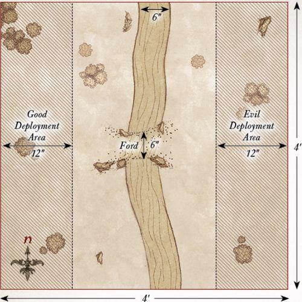
THE HOSTS CLASH
LAYOUT
The board represents the lands between Erebor and Dale. The lands themselves are relatively barren and should have a few hedges, bushes, rocky outcrops, and other shrubbery dotted around.
STARTING POSITIONS
The Good player deploys their forces within 12" of the northern board edge. The Evil player then deploys their forces within 12" of the southern board edge.
OBJECTIVES
The Battle of Dale has begun, embroiling both sides in a desperate war. The game lasts for 15 turns; at which point the side which has killed the highest number of points worth of models is the winner.
SPECIAL RULES
- To War!
Models from both sides, apart from those armed with a bow, Esgaroth bow, or crossbow, must Charge if able to do so.
- A Bond Forged in War
If either Dáin or Brand would be Trapped in the Fight phase, then the other may declare a Heroic Combat without spending Might. If successful, they must join their Trapped ally's fight if possible. If this is not possible, they must move as close as possible to their Trapped ally.
- Heroes of the Easterlings
Easterling Hero models may re-roll a D6 in a Duel roll.
PARTICIPANTS
Good: Brand, King of Dale; Bard II, Prince of Dale; Dáin Ironfoot, King Under the Mountain; Thorin III Stonehelm; Captain of Dale with shield; Iron Hills Captain; 22 Warriors of Dale: 6 with shield, 8 with spear and shield, 6 with Esgaroth bow, 1 with banner, 1 with war horn; 12 Knights of Dale; 25 Iron Hills Dwarves: 12 with spear, 6 with mattock, 6 with crossbow, 1 with banner.
Evil: The Dragon Emperor of Rhûn; Rutabi, General of the Dragon Legion; Brórgîr the Conjurer; Easterling Captain with armoured horse, sword and shield; Easterling War Priest; Easterling Dragon Knight; 31 Easterling Warriors: 12 with shield, 6 with shield and pike, 12 with bow, 1 with banner; 5 Easterling Kataphrakts; 18 Black Dragons: 9 with shield, 9 with pike and shield; 12 Dragon Cult Acolytes; 4 Rhûnish War Drakes.
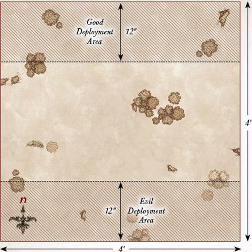
PLAINS OF EREBOR
LAYOUT
The board represents the lands between Erebor and Dale. The lands themselves are relatively barren and should have a few hedges, bushes, rocky outcrops, and other shrubbery dotted around. There should be three Objective Markers on the board. The first is placed in the center of the board. One is placed halfway between the center of the board and the north-east corner, while the final one is placed halfway between the center of the board and the north-west corner.
STARTING POSITIONS
The Good player deploys their models anywhere within the northern half of the board. The Evil player then places their models anywhere within the southern half of the board, but not within 1" of an enemy model.
OBJECTIVES
The Easterlings have begun to force the alliance of Men and Dwarves back and now look to claim key areas of the battlefield. The game lasts for 10 turns. The Good player wins if they control at least two objectives at the end of the 10th turn. The Evil player wins if they control at least two objectives at the end of the 10th turn. Any other result is a draw.
SPECIAL RULES
- Controlling Objectives
An army is considered to be controlling an Objective Marker if there are more friendly models within 3" of the marker than enemy models. If both sides have the same number of models within 3", then neither side controls that Objective Marker.
- A Bond Forged in War
If either Dáin or Brand would be Trapped at the start of the Fight phase, then the other may declare a Heroic Combat without spending Might. If successful, they must join their Trapped ally's fight if possible. If this is not possible, they must move as close as possible to their Trapped ally.
- Heroes of the Easterlings
Easterling Hero models may re-roll a D6 in a Duel roll.
PARTICIPANTS
Good: Brand, King of Dale; Bard II, Prince of Dale; Dáin Ironfoot, King Under the Mountain; Thorin III Stonehelm; 12 Warriors of Dale: 3 with shield, 4 with spear and shield, 3 with Esgaroth bow, 1 with banner, 1 with war horn; 6 Knights of Dale; 13 Iron Hills Dwarves: 6 with spear, 3 with mattock, 3 with crossbow, 1 with banner.
Evil: The Dragon Emperor of Rhûn; Rutabi, General of the Dragon Legion; Brórgîr the Conjurer; 21 Easterling Warriors: 8 with shield, 4 with shield and pike, 8 with bow, 1 with banner; 12 Black Dragons: 6 with shield, 6 with pike and shield; 6 Dragon Cult Acolytes; 2 Rhûnish War Drakes.
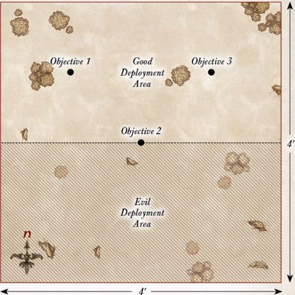
DEATH OF BRAND
LAYOUT
The board represents the lands between Erebor and Dale. The lands themselves are relatively barren and should have a few hedges, bushes, rocky outcrops, and other shrubbery dotted around. In the center of the board should be a slightly raised area for Brand to defend.
STARTING POSITIONS
The Good player deploys Brand in the center of the board, and then deploys the Knights of Dale within 3" of him.
The Evil player deploys their force within 12" of the center of the board, but not within 6" of an enemy model. The Good player then deploys the rest of their models within 12" of the center of the northern board edge.
OBJECTIVES
Brand has been separated from his allies, and Dáin must now fight his way to Brand's side before the Easterling forces overwhelm him. The game lasts for 10 turns, or until Brand is slain. The Good player wins if Brand is alive at the end of the game. The Evil player wins immediately if Brand is slain.
SPECIAL RULES
- Brand's Last Stand
In this Scenario, Brand increases his Fight value to 6.
- Allies in War
Dáin may declare a Heroic Combat each turn without spending Might.
PARTICIPANTS
Good: Brand, King of Dale; Dáin Ironfoot, King Under the Mountain; 6 Knights of Dale; 12 Iron Hills Dwarves with spear.
Evil: Rutabi, General of the Dragon Legion; Brórgîr the Conjurer; 20 Easterling Warriors: 8 with shield, 4 with shield and pike, 8 with bow; 2 Rhûnish War Drakes.
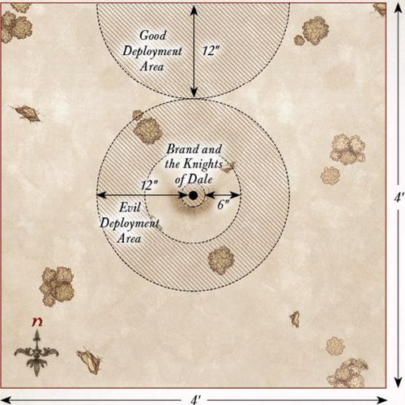
DÁIN'S LAST STAND
LAYOUT
The board represents the lands between Erebor and Dale. The lands themselves are relatively barren and should have a few hedges, bushes, rocky outcrops, and other shrubbery dotted around. In the center of the board should be a slightly raised area for Dáin to defend.
STARTING POSITIONS
The Good player deploys Dáin in the center of the board, and then deploys their remaining models within 3" of him. The Evil player then deploys their models anywhere on the board at least 6" from any Good model.
OBJECTIVES
Incensed by the death of his friend, Dáin will defend Brand's body until either the battle ends or he himself falls. The game lasts for 12 turns or until Dáin is slain. The Good player wins if Dáin is alive at the end of 12 turns. The Evil player wins immediately if Dáin is slain.
SPECIAL RULES
- The Wrath of Ironfoot
Dáin Ironfoot must re-roll all failed To Wound rolls.
- Victory within Reach
Easterling models within 3" of the center of the board count as being in range of a banner.
PARTICIPANTS
Good: Dáin Ironfoot, King Under the Mountain; 12 Iron Hills Dwarves with spear.
Evil: Rutabi, General of the Dragon Legion; Brórgîr the Conjurer; 20 Easterling Warriors: 8 with shield, 4 with shield and pike, 8 with bow; 2 Rhûnish War Drakes.
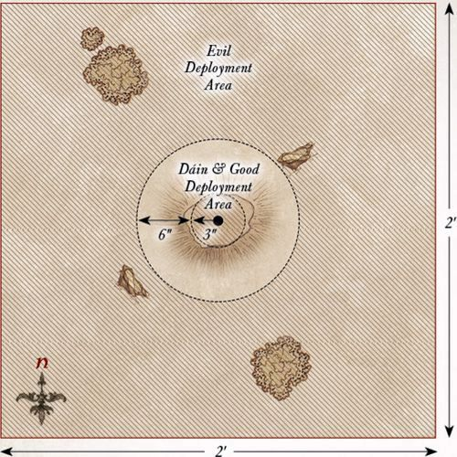
RETREAT TO EREBOR
LAYOUT
The board represents the lands between Erebor and Dale. The lands themselves are relatively barren and should have a few hedges, bushes, rocky outcrops, and other shrubbery dotted around. The northern board edge represents the Lonely Mountain, in the center of which are the gates of Erebor, which are 6" wide in total.
STARTING POSITIONS
The Good player deploys their forces within 12" of the center of the southern board edge. The Evil player splits their force into two equal halves, each containing one named Hero. The half containing Rutabi deploys anywhere within 6" of the western board edge, but not within 12" of the northern board edge. The half containing Brórgîr deploys anywhere within 6" of the eastern board edge, but not within 12" of the northern board edge.
OBJECTIVES
With the armies of Erebor and Dale severely outnumbered, they must retreat to Erebor if they are to survive. However, the Easterling forces are trying to cut them off from the safety of the Lonely Mountain.
The game lasts until either the Good player completes their objective, or the Evil player kills enough Good models to make it impossible for the Good player to win. The Good player wins if 10 or more Good models move off the board via the gates of Erebor. The Evil player wins if they can prevent this. Additionally, if either Bard or Thorin are slain, the best result the Good player can achieve is a draw.
SPECIAL RULES
- Fall Back!
Bard and Thorin may declare Heroic March in this Scenario, even though they would not normally be able to do so.
Additionally, whenever Bard or Thorin declare a Heroic March, they do not need to spend Might points to do so — it is free.
- The Heirs to the Kingdoms
If either Thorin Stonehelm or Bard II would be Trapped in the Fight phase, then the other may declare a Heroic Combat without spending Might. If successful, they must join their Trapped ally's fight if possible. If this is not possible, they must move as close as possible to their Trapped ally.
PARTICIPANTS
Good: Bard II, Prince of Dale; Thorin III Stonehelm; 11 Warriors of Dale: 3 with shield, 4 with spear and shield, 3 with Esgaroth bow, 1 with banner; 6 Knights of Dale; 12 Iron Hills Dwarves: 6 with spear, 3 with mattock, 3 with crossbow.
Evil: Rutabi, General of the Dragon Legion; Brórgîr the Conjurer; 21 Easterling Warriors: 8 with shield, 4 with shield and pike, 8 with bow, 1 with banner; 12 Black Dragons: 6 with shield, 6 with pike and shield; 6 Dragon Cult Acolytes; 2 Rhûnish War Drakes.
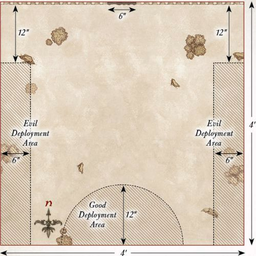
SIEGE OF EREBOR
LAYOUT
The board represents the battlements of Erebor and the siege ladders propped up against the walls. The area within 9" of the northern board edge is the battlements and should be relatively clear. There are five siege ladders in this battle, spaced out as shown on the map. The area within 3" of the southern board edge is the plains outside Erebor — and is rather a long way down!
STARTING POSITIONS
The Good player deploys all of their models within 6" of the northern board edge. The Evil player then deploys their models within 1" of the Siege Ladders.
OBJECTIVES
The Easterlings have made it onto the battlements of Erebor, and now the Men and Dwarves must fight to prevent the walls from being overrun. If they can stem the tide of Easterlings, they may be able to buy themselves some more time.
The game lasts for 12 turns. The Good side wins if at the end of 12 turns they have managed to kill 35 or more Evil models (it's important to keep track). The Evil side wins if they can prevent this. If either Bard or Thorin die, the best result the Good side can achieve is a draw.
SPECIAL RULES
- Numbers beyond Count
Each time an Easterling Warrior is slain, keep it to one side. At the end of each Evil Move phase, any models kept aside in this manner may move onto the board from the siege ladders. Models that arrive in this way may Charge in the turn in which they arrive. Any models that cannot move onto the board in this way are kept aside for the next turn.
- Battlements of Erebor
The southern edge of the walls of Erebor is lined with battlements that can trap a model against them. Additionally, a model that is pushed from the battlements and onto the ground below is automatically slain — it's a rather steep fall!
PARTICIPANTS
Good: Bard II, Prince of Dale; Thorin III Stonehelm; 10 Warriors of Dale: 3 with shield, 4 with spear & shield, 3 with Esgaroth bow; 6 Knights of Dale; 12 Iron Hills Dwarves: 6 with spear, 3 with mattock, 3 with crossbow.
Evil: Rutabi, General of the Dragon Legion; Easterling Captain with shield; Easterling Dragon Knight; 21 Easterling Warriors: 8 with shield, 4 with shield and pike, 8 with bow, 1 with banner; 12 Black Dragons: 6 with shield, 6 with pike and shield; 6 Dragon Cult Acolytes.
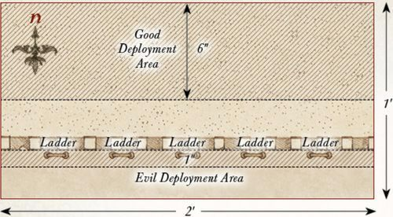
THE TIDE TURNS
LAYOUT
The board represents the lands between Erebor and Dale. The lands themselves are relatively barren and should have a few hedges, bushes, rocky outcrops, and other shrubbery dotted around. The northern board edge is the Lonely Mountain, in the center of which are the gates of Erebor, which are 6" wide in total.
STARTING POSITIONS
The Good player deploys their force within 12" of the center of the northern board edge. The Evil player then deploys their forces within 24" of the southern board edge.
OBJECTIVES
With hope renewed, this is the last chance for the Men and Dwarves to achieve victory and defeat the Easterling invaders.
The game lasts until the end of a turn in which one force has been reduced to 25% of its starting numbers. The Good player wins if they can reduce the Evil force to 25%. The Evil player wins if they can reduce the Good player to 25%. If both forces are reduced to 25% in the same turn, the game is a draw.
SPECIAL RULES
- The Heirs to the Kingdoms
If either Thorin III Stonehelm or Bard II would be Trapped in the Fight phase, the other may declare a Heroic Combat without spending Might. If successful, they must join their Trapped ally's fight if possible. If this is not possible, they must move as close as possible to their Trapped ally.
- Broken Morale
The Evil force counts as Broken for this Scenario, and must test to see if they flee, even though forces do not normally break in Narrative Play games.
PARTICIPANTS
Good: Bard II, Prince of Dale; Thorin III Stonehelm; Captain of Dale with shield; Iron Hills Dwarf Captain; 21 Warriors of Dale: 6 with shield, 8 with spear and shield, 6 with Esgaroth bow, 1 with banner; 6 Knights of Dale; 25 Iron Hills Dwarves: 12 with spear, 6 with mattock, 6 with crossbow, 1 with banner.
Evil: The Dragon Emperor of Rhûn; Rutabi, General of the Dragon Legion; Brórgîr the Conjurer; Easterling Captain with shield; Easterling Dragon Knight; 21 Easterling Warriors: 8 with shield, 4 with shield and pike, 8 with bow, 1 with banner; 18 Black Dragons: 9 with shield, 9 with pike and shield; 12 Dragon Cult Acolytes; 2 Rhûnish War Drakes.
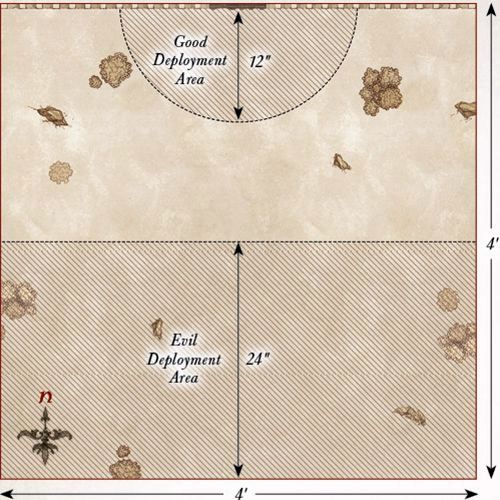
GOLLUM'S ESCAPE
LAYOUT
The board represents an area of Mirkwood forest. As such, the board should be densely packed with trees, bushes, and other appropriate undergrowth.
STARTING POSITIONS
The Evil player places Gollum in the center of the board. The Good player then deploys their forces within 6" of the center of the board. The Evil player then deploys the rest of their models within 6" of any board edge.
OBJECTIVES
With the attack of the Orcs and Wargs, Gollum sees a chance to escape his Elven captors. The Elves must fend off the assault and ensure that they do not let Gollum slip through their fingers.
The game lasts until one force has completed their objective. The Good player wins if at the end of any turn all the Orcs and Wargs have been slain. The Evil player wins immediately if Gollum escapes the board via the southern board edge.
SPECIAL RULES
- Gollum
Gollum does not have the Ring in this Scenario. Additionally, Gollum may not charge enemy models, though he will fight as normal if he is charged.
- Elven Prisoner
If Gollum is slain, the best result the Good player can achieve is a draw.
PARTICIPANTS
Good: Mirkwood Ranger Captain; 10 Mirkwood Rangers.
Evil: Gollum; Orc Captain with shield; 12 Orc Warriors: 4 with shield, 4 with spear, 2 with two-handed weapon, 2 with Orc bow; 6 Fell Wargs.
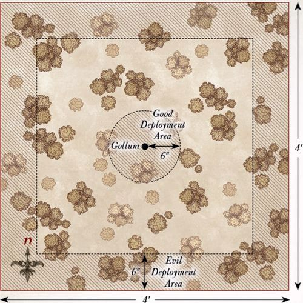
AN UNEASY ALLIANCE
LAYOUT
The board represents the dense wooded area of Mirkwood where the Spider Queen's lair resides. As such, there should be plenty of trees, bushes, and undergrowth dotted around. Four Spider Nests, no more than 6" in diameter, should be placed on the board, one in the center of each 2'x2' area of the board. In the center of the eastern board edge is the entrance to the Spider Queen's lair, which is built into a rocky outcrop.
STARTING POSITIONS
The 'Good' player deploys the Spider Queen, 2 Mirkwood Spiders, 2 Giant Spiders, and the Bat Swarms within 12" of the entrance to the Spider Queen's Lair. They then place one spider in each of the Spider Nests. The Evil player deploys their forces within 12" of the western board edge.
OBJECTIVES
The Orcs have ventured into the Spider Queen's lair with the intent of bending her to their will and getting her to join their fight against the Elves. However, being a vicious creature, the Spider Queen does not take kindly to those that enter her lair.
The game lasts until one force has completed their objective. The 'Good' player wins if they can reduce the Evil force to 25% of its starting numbers at the end of any turn. The Evil player wins if they can force the Spider Queen to submit and bend to their will.
SPECIAL RULES
- The Spider Queen
Once the Spider Queen has been wounded, there is a chance she will submit in order to survive. If during the End phase of any turn the Spider Queen has 2 or fewer Wounds remaining, she must take a Courage test, which cannot be modified by Might or Will points. The third time this test is failed, the Spider Queen will submit to the Orcs and the game will end.
- We Need Her Alive
If the Spider Queen is slain, the game immediately ends and is a draw.
- Spider Nests
Evil models treat Spider Nests as difficult terrain. Additionally, whenever a Spider model is slain, keep it to one side. At the start of each turn, before Priority is determined, roll a D6 for each Spider model kept aside in this manner. On a 5+, that model will re-enter the board via one of the Spider Nests. To determine where they enter, roll a further D6. On a 1-3, the Evil player chooses which Spider Nest the model enters from; on a 4+, the 'Good' player decides. Models that arrive in this manner are placed anywhere within or touching the Spider Nest and may act as normal that turn.
PARTICIPANTS
'Good': The Spider Queen; 4 Mirkwood Spiders; 4 Giant Spiders; 2 Bat Swarms.
Evil: Razgûsh, War Leader of the North; Orc Captain with shield; 24 Orc Warriors: 8 with shield, 8 with spear, 4 with two-handed weapon, 4 with Orc bow; 6 Warg Riders: 2 with shield, 2 with throwing spear, 2 with Orc bow; 3 Orc Trackers.
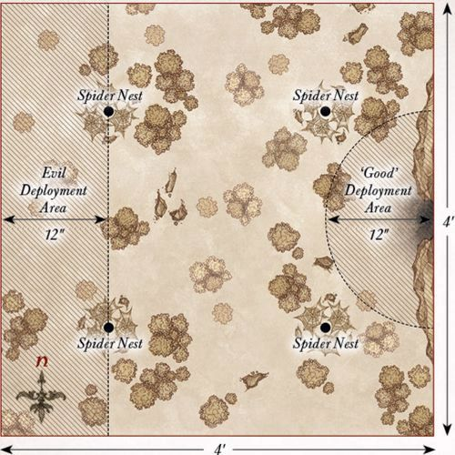
ATTACK ON THE BEORNINGS
LAYOUT
The board represents a clearing near the Beorning homestead. The area within 12" of the center of the board should be clear, while the rest of the board should be densely packed with trees, bushes, and other undergrowth.
STARTING POSITIONS
The Good player deploys the Beornings within 6" of the center of the board. The Evil player then splits their forces into two equal halves and deploys one half within 12" of the eastern board edge, and the other half within 12" of the western board edge. Grimbeorn is kept aside for later in the game.
OBJECTIVES
The Beornings are fighting to stave off the assault on their home long enough for Grimbeorn to return and aid them. The Orcs are out to slay the Beornings so they cannot aid the Elves in Mirkwood.
The game lasts for 10 turns. The Good side wins if, at the end of the 10th turn, there are at least four Beornings left alive. The Evil side wins if they can slay enough Beornings to prevent this. If Grimbeorn is slain, the best result the Good player can achieve is a draw.
SPECIAL RULES
- Grimbeorn
From turn 2 onwards, roll a D6 at the start of each turn before Priority is determined and add the current turn number. On a score of 8 or more, Grimbeorn has arrived. Grimbeorn will enter the board from the center of any board edge via the rules for reinforcements. Additionally, Grimbeorn will already be in bear form, so there is no need to roll.
- Unbridled Rage
Grimbeorn must re-roll all failed To Wound rolls.
PARTICIPANTS
Good: Grimbeorn; 12 Beornings: 8 with hand-and-a-half axe, 4 with great bow.
Evil: 2 Orc Captains with shield; 24 Orc Warriors: 8 with shield, 8 with spear, 4 with two-handed weapon, 4 with Orc bow; 6 Warg Riders: 2 with shield, 2 with throwing spear, 2 with Orc bow; 6 Orc Trackers.
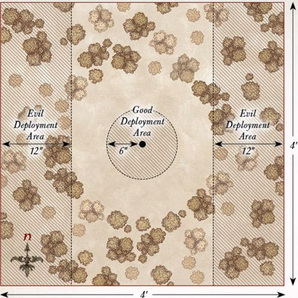
BURNING OF MIRKWOOD
LAYOUT
The board represents an area of Mirkwood forest and should be densely packed with trees, bushes, and other undergrowth. There should be five larger trees that are spread equidistantly along the center line of the board from east to west; these are the objectives.
STARTING POSITIONS
The Good player deploys their forces within 12" of the northern board edge. The Evil player then deploys their forces within 12" of the southern board edge.
OBJECTIVES
The Orcs have come to burn down the Elven kingdom of Mirkwood, and plan on starting by torching some of the taller trees on the borders of their kingdom.
The game lasts for 10 turns. The Good player wins if at least three of the larger trees are still standing at the end of the game. The Evil player wins if at least three of the larger trees have been destroyed by the end of the game.
SPECIAL RULES
- Destroying Trees
During the End phase of each turn, any Orc model in base contact with one of the larger trees may attempt to destroy it, provided they have not fought in a combat, supported a combat, fired a missile weapon this turn, or are Prone. When an Orc attempts to destroy a tree, their controlling player rolls a D6. On a 5+, that tree has been destroyed.
- Timber!
Whenever a tree is destroyed, it will fall to the ground; roll a D6 to determine which way it falls and consult the chart below:
| D6 | Result |
|---|---|
| 1 | The Evil player chooses the direction it falls. |
| 2 | The tree falls towards the southern board edge. |
| 3 | The tree falls towards the eastern board edge. |
| 4 | The tree falls towards the western board edge. |
| 5 | The tree falls towards the northern board edge. |
| 6 | The Good player chooses the direction it falls. |
When a tree falls, draw a 1mm wide line from the center of the tree that extends 6" in the required direction. Any model whose base is under that line suffers a Strength 8 hit and is knocked Prone. The tree is then removed from play.
PARTICIPANTS
Good: Tauriel; Mirkwood Captain; Mirkwood Ranger Captain; 12 Mirkwood Elves: 4 with shield, 4 with Elven-made glaive, 4 with Elf bow; 10 Mirkwood Rangers.
Evil: Razgûsh, War Leader of the North; The Spider Queen; Orc Captain with shield; 24 Orc Warriors: 8 with shield, 8 with spear, 4 with two-handed weapon, 4 with Orc bow; 6 Warg Riders: 2 with shield, 2 with throwing spear, 2 with Orc bow; 6 Orc Trackers; 2 Mirkwood Spiders; 2 Giant Spiders; 1 Bat Swarm.
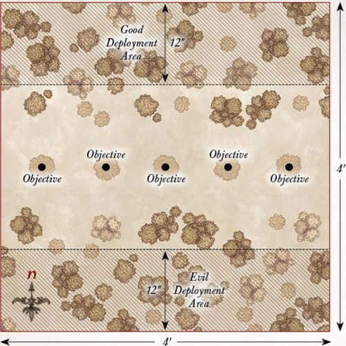
BATTLE UNDER THE TREES
LAYOUT
The board represents an area of Mirkwood forest and should be densely packed with trees, bushes, and other undergrowth.
STARTING POSITIONS
The Good player deploys their forces within 12" of the northern board edge, but not within 12" of either the eastern or western board edges. The Evil player then deploys their forces within 12" of the southern board edge.
OBJECTIVES
The battle for Mirkwood has begun and both sides will use every ounce of strength to achieve victory.
The game lasts until the end of a turn in which one force has been reduced to 25% or less of its starting numbers.
The Good player wins if the Evil force has been reduced to 25%. The Evil player wins if the Good force has been reduced to 25%. If both sides are reduced to 25% in the same turn, the game is a draw.
SPECIAL RULES
- Through the Forest
Evil models gain the Woodland Creature special rule.
- Death to the Elves
Evil models gain the Hatred (Elf) special rule.
- The War Leader
Razgûsh gains a bonus of +1 to his Fight value when engaged with an enemy Elf model.
- Defend the Forest
Elf models must re-roll 1s To Wound during the Fight phase.
PARTICIPANTS
Good: Thranduil, King of the Woodland Realm, with heavy armour and additional Elven-made hand-and-a-half sword; Tauriel; Palace Guard Captain with shield; Mirkwood Captain; Mirkwood Ranger Captain; 10 Palace Guard: 4 with shield, 4 with spear, 2 with spear & shield; 12 Mirkwood Elves: 4 with shield, 4 with Elven-made glaive, 4 with Elf bow; 10 Mirkwood Rangers.
Evil: Razgûsh, War Leader of the North; The Spider Queen; 2 Orc Captains with shield; Orc Shaman; 36 Orc Warriors: 12 with shield, 12 with spear, 6 with two-handed weapon, 6 with Orc bow; 6 Warg Riders: 2 with shield, 2 with throwing spear, 2 with Orc bow; 6 Orc Trackers; 4 Mirkwood Spiders; 4 Giant Spiders; 2 Bat Swarms; 6 Fell Wargs.
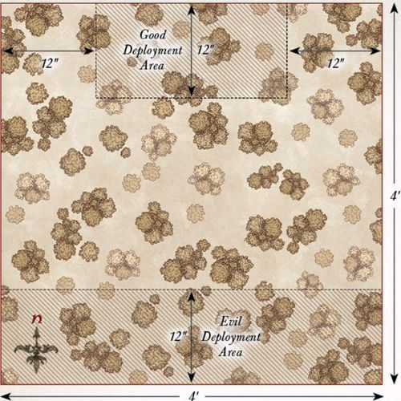
CROSSING OF THE ANDUIN
LAYOUT
The board represents part of the River Anduin and the edges of Lothlórien. There should be a 6" wide river running down the center of the board from north to south, in the center of which should be a 6" wide ford for models to cross safely. The area within 12" of the western board edge is the forest of Lórien and should be densely packed with trees. The rest of the board should be relatively clear with the odd tree, bush, or bit of shrubbery dotted around.
STARTING POSITIONS
The Good player deploys their models within 12" of the western board edge. The Evil player then deploys their models within 12" of the eastern board edge.
OBJECTIVES
The Elves have seen the advancing Orcs and aim to prevent them from entering the Golden Wood.
The game lasts until one force has completed their objective. The Evil player wins if 10 or more Evil models escape the board via the western board edge. The Good player wins if they can slay enough models to make it impossible for the Evil player to win.
SPECIAL RULES
- Defend our Borders
Good models may not willingly move further than 12" away from the western board edge. If a Good model finds itself further than 12" from the western board edge at the start of its Move phase, it must try to move back within 12" if possible.
- The Anduin
The river is Deep Water, with the exception of the ford, which is treated as open ground. Additionally, any model that makes a Swim test for trying to cross the Anduin suffers an additional -1 penalty to their roll.
PARTICIPANTS
Good: Wood Elf Captain with Elf bow; 12 Wood Elf Warriors: 4 with throwing daggers, 4 with Wood Elf spear, 4 with Elf bow; 1 Wood Elf Sentinel.
Evil: Muzgúr, Orc Shaman; Orc Captain with shield; 12 Orc Warriors: 4 with shield, 4 with spear, 2 with two-handed weapon, 2 with Orc bow; 6 Warg Riders: 2 with shield, 2 with throwing spear, 2 with Orc bow; 6 Orc Trackers.
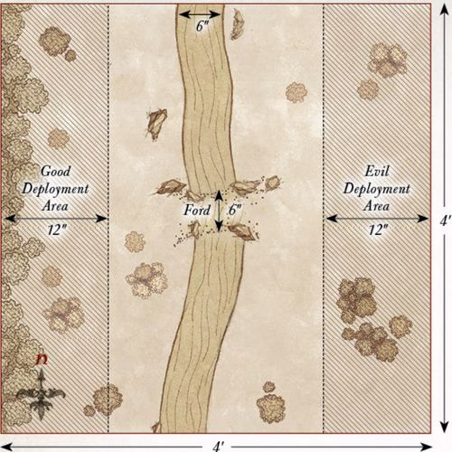
ATTACK ON LÓRIEN
LAYOUT
The board represents an area of Lothlórien, and as such should be densely packed with trees, bushes, and other appropriate undergrowth. In the center of the board should be a Mallorn tree with a trunk with a diameter of 3".
STARTING POSITIONS
The Good player deploys their forces within 12" of the western board edge. The Evil player then deploys their forces within 12" of the eastern board edge.
OBJECTIVES
The Mallorn trees within Lothlórien grow to immense heights and are the pride of the Golden Wood, and it is these trees that the Orcs plan to destroy.
The game lasts for 10 turns. The Good player wins if the Mallorn tree is still alive at the end of the game. The Evil player wins immediately if the Mallorn tree is destroyed.
SPECIAL RULES
- The Mallorn Tree
The Mallorn tree has a Defence of 10 and 10 Wounds. Evil models may fight the Mallorn tree in the Fight phase, providing they have not already been or are in a Fight that turn, and have not made a shooting attack that turn. Models may use Special Strikes against the Mallorn tree, and may support models fighting the Mallorn tree. The Mallorn tree will always lose the fight and always counts as Trapped.
- Decay
Muzgúr and the Orc Shaman gain the following additional Magical Power:
DECAY DURATION: INSTANT
This Magical Power may only target the Mallorn tree, has a range of 6" and is cast on a 4+. The Mallorn tree suffers a Wound. Additionally, it reduces its Defence characteristic by 1 for the remainder of the game.
Additionally, both Muzgúr and the Orc Shaman gain a free Will point per turn, which can only be used to cast the Decay Magical Power.
PARTICIPANTS
Good: Orophin; Wood Elf Captain with Elf bow; 12 Galadhrim Warriors: 4 with shield, 4 with spear and shield, 4 with Elf bow; 12 Wood Elf Warriors: 4 with throwing daggers, 4 with Wood Elf spear, 4 with Elf bow.
Evil: Muzgúr, Orc Shaman; Orc Captain with shield; Orc Shaman; 24 Orc Warriors: 8 with shield, 8 with spear, 4 with two-handed weapon, 4 with Orc bow; 6 Warg Riders: 2 with shield, 2 with throwing spear, 2 with Orc bow; 6 Orc Trackers.
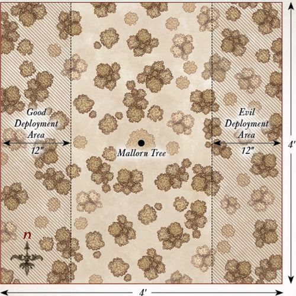
TRAPPED ON BOTH SIDES
LAYOUT
The board represents an area of Lothlórien, and as such should be densely packed with trees, bushes, and other appropriate undergrowth.
STARTING POSITIONS
The Good player deploys their force within 6" of the centre of the board. The Evil player then splits their force into two halves, one with all the Mordor models and one with all the Moria and Spider models. The Mordor models are then deployed within 12" of the eastern board edge. The Moria and Spider models are deployed within 12" of the western board edge.
OBJECTIVES
With their reinforcements having arrived, the Elves are trying to fend off the combined forces of Orcs and Goblins from overrunning the forest.
The game lasts for 12 turns. At the end of the 12th turn, whichever side has the most models wholly within 6" of the centre of the board is the winner. If both sides have the same number of models wholly within 6" of the centre of the board, the game is a draw.
SPECIAL RULES
- Cover of Darkness
The battle takes place at night. As such, due to the reduced visibility, models cannot be targeted by shooting, Magical Powers, or special abilities over 12" away. However, as it is much harder to avoid a shot in the dark, all shooting attacks gain a bonus of +1 when rolling To Wound. Models with the Cave Dweller special rule can see as normal.
- Dark Magics
Evil models may re-roll any number of D6s when making a Casting roll.
- Defend the Golden Wood
All Good models automatically pass any Courage tests they are required to make.
PARTICIPANTS
Good: Rúmil; Orophin; Wood Elf Captain with Elf bow; 24 Galadhrim Warriors: 8 with shield, 8 with spear and shield, 8 with Elf bow; 12 Wood Elf Warriors: 4 with throwing daggers, 4 with Wood Elf spear, 4 with Elf bow; 4 Guard of the Galadhrim Court; 1 Wood Elf Sentinel.
Evil: Muzgúr, Orc Shaman; Drûzhag the Beastcaller; Ashrâk; Orc Shaman; 24 Orc Warriors: 8 with shield, 8 with spear, 4 with two-handed weapon, 4 with Orc bow; 6 Warg Riders: 2 with shield, 2 with throwing spear, 2 with Orc bow; 6 Orc Trackers; 24 Moria Goblins: 8 with shield, 8 with spear, 8 with Goblin bow; 4 Venom-back Spiders; 2 Warg Marauders.

FINAL ASSAULT ON LOTHLÓRIEN
LAYOUT
The board represents an area of Lothlórien, and as such should be densely packed with trees, bushes, and other appropriate undergrowth. Galadriel's mirror is deployed 12" from the centre of the northern board edge as shown on the map.
STARTING POSITIONS
The Good player deploys their force within 12" of the centre of the northern board edge. The Evil player then deploys their force within 12" of the southern board edge.
OBJECTIVES
This is the final assault on Lothlórien, and the combined forces of Orcs and Goblins have come to destroy Caras Galadhon.
The game lasts until the end of a turn in which one force has been reduced to 25% or less of its starting numbers. The Good player wins if the Evil force has been reduced to 25%. The Evil player wins if the Good force has been reduced to 25%. If both sides are reduced to 25% in the same turn, the game is a draw.
SPECIAL RULES
- Galadriel
If Galadriel is slain, the game immediately ends and the Evil side is victorious, regardless of any other factors.
- Cover of Darkness
The battle takes place at night. Due to reduced visibility, models cannot be targeted by shooting, Magical Powers, or special abilities over 12" away. However, all shooting attacks gain a bonus of +1 when rolling To Wound, as it is harder to avoid a shot in the dark. Models with the Cave Dweller special rule can see as normal.
- Dark Magics
Evil models may re-roll any number of D6s when making a Casting roll.
- Defend the Golden Wood
All Good models automatically pass any Courage tests they are required to make.
PARTICIPANTS
Good: Galadriel with mirror of Galadriel; Celeborn with heavy armour, shield, and Elven-made hand-and-a-half sword; Rúmil; Orophin; 24 Galadhrim Warriors: 8 with shield, 8 with spear and shield, 8 with Elf bow; 12 Wood Elf Warriors: 4 with throwing daggers, 4 with Wood Elf spear, 4 with Elf bow; 4 Guard of the Galadhrim Court; 3 Wood Elf Sentinels.
Evil: Muzgúr, Orc Shaman; Drûzhag the Beastcaller; Ashrâk; Orc Shaman; 24 Orc Warriors: 8 with shield, 8 with spear, 4 with two-handed weapon, 4 with Orc bow; 6 Warg Riders: 2 with shield, 2 with throwing spear, 2 with Orc bow; 6 Orc Trackers; 24 Moria Goblins: 8 with shield, 8 with spear, 8 with Goblin bow; 4 Venom-back Spiders; 3 Warg Marauders.
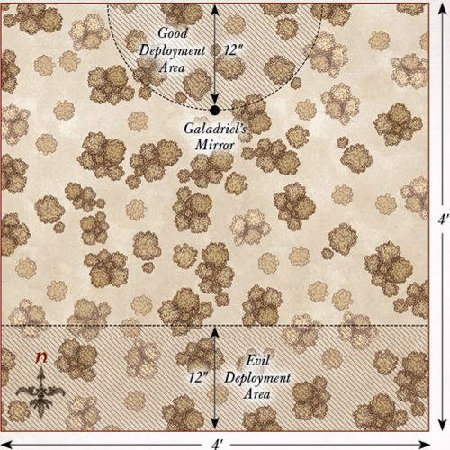
FALL OF DOL GULDUR
LAYOUT
The board represents the ruins of Dol Guldur. There should be a total of seven sections of ruined walls, towers, or buildings spread out evenly, each no larger than 6" in diameter. None of these ruins may be within 6" of the southern board edge. The rest of the board should have areas of rubble and rocky outcrops dotted around.
STARTING POSITIONS
The Evil player deploys one Castellan of Dol Guldur within each ruin. The rest of their forces are then deployed as evenly as possible within each of the ruins. The Good player then deploys their force within 6" of the southern board edge.
OBJECTIVES
The Galadhrim have come to protect Galadriel, who intends to tear down the walls of Dol Guldur for good.
The game lasts until one player completes their objective. The Good player wins immediately if they can destroy all seven of the ruins of Dol Guldur. The Evil player wins immediately if Galadriel is slain.
SPECIAL RULES
- The Lady of Light
Galadriel may only attempt to cast the following Magical Power during the game:
BREAK STONE DURATION: INSTANT
This Magical Power may only target the ruins of Dol Guldur, has a range of 3" and is cast on a 4+. The targeted ruins are immediately destroyed. Any models within the ruins, or within 1" of the ruins, when they are destroyed suffer a Strength 8 hit.
- Weary from War
Each Good Hero model starts the game with one fewer Might point than usual.
PARTICIPANTS
Good: Galadriel; Celeborn with heavy armour, shield, and Elven-made hand-and-a-half sword; Rúmil; Orophin; 24 Galadhrim Warriors: 8 with shield, 8 with spear and shield, 8 with Elf bow; 4 Guard of the Galadhrim Court.
Evil: 6 Castellans of Dol Guldur with Morgul Blade; 12 Hunter Orcs: 4 with Orc bow, 2 with two-handed pick, 6 with no additional wargear; 12 Fell Wargs; 4 Mirkwood Spiders.
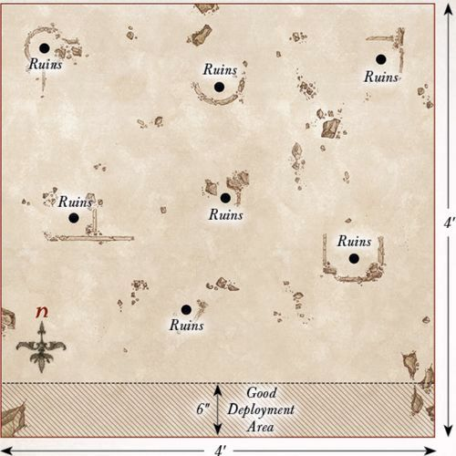
APPENDIX - DESTRUCTION OF DALE
LAYOUT
This battle takes place within Dale, City of Men. To represent this, you will want a board covered in buildings, roads, pathways, and, of course, plenty of towers to fire at the Dragon from. The center of the playing area should have the highest tower on the board (this needs to be accessible), and the Windlance should be placed on top of this – Dale's only hope at stopping the dreaded Smaug!
STARTING POSITIONS
The Good player deploys their force anywhere on the board, but at least 6" from any board edge and at least 6" from the Windlance. The Evil player does not deploy Smaug; he will move onto the board on the first turn.
OBJECTIVES
This is a fight to the death. The Men of Dale must slay the Dragon, or perish in the attempt. The first side to wipe out their opponent is declared the winner.
SPECIAL RULES
- The Coming of Smaug
At the end of the Evil player's first Move phase, Smaug will arrive. The Evil player rolls a D6. On a 1-3, the Good player may decide which board edge Smaug arrives from. On a 4+, the Evil player may choose instead.
- Not Yet Loosened
Smaug is not subject to his Missing Scale rule in this Scenario.
- The Lord of Dale
Girion automatically passes all Courage tests for this Scenario. Additionally, Girion may choose to re-roll a single D6 in each turn.
PARTICIPANTS
Good: Girion, Lord of Dale; 2 Captains of Dale; 30 Warriors of Dale: 9 with shield, 12 with spear and shield, 9 with Esgaroth bow.
Evil: Smaug.
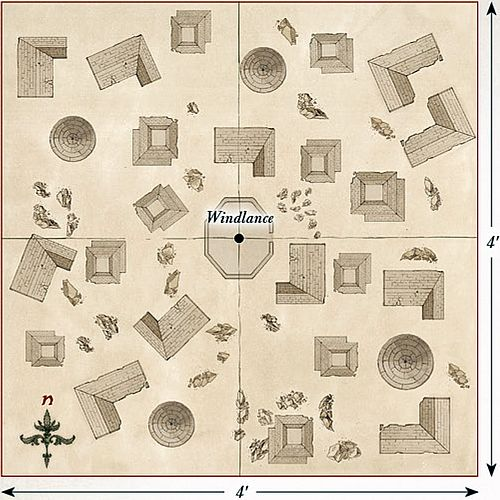
APPENDIX - BATTLE FOR DALE
LAYOUT
This scenario takes place within the city of Dale. The city is closely packed with houses, providing plenty of streets of various sizes in which to fight. The area within 6" of the center of the board is clear and represents the courtyard. It is the streets that make this scenario exciting; some should be big enough for only one or two models, whereas others should fit many more. The center of the southern board edge represents the gates of Dale. Five Objective Markers should be placed as shown on the map.
STARTING POSITIONS
The Good player deploys all of their models except the Elves (these are kept aside for later) anywhere within 12" of the northern board edge. The Evil player deploys half of their models anywhere within 12" of the southern board edge, and the other half anywhere between 12" and 24" of the southern board edge.
OBJECTIVES
The Orcs are trying to take the city and will not stop until all those within it are dead. The Men and Elves are trying to prevent the city from falling into Orcish hands. Both forces are trying to capture key areas of Dale (represented by the markers). The game lasts until one force has been reduced to 25% of its starting number, at which point whichever side has captured the most objectives by having more models within 3" of them is the winner. Additionally, if both Thranduil and Bard have been slain, the best result the Good player can achieve is a draw.
SPECIAL RULES
- The Elven Host
At the end of the Good player's second Move phase, the Elves move onto the board through the gates of Dale.
- "You're not a Man, you're a Weasel"
Alfrid may not use his Dubious Counsel special rule.
- Radagast's Staff
Whenever Gandalf declares that he is casting a Magical Power, declare how many Will points are being used, then roll a single D6 before rolling to cast. On a 1 or 2, the Magical Power is not cast, and any Will points declared are lost.
PARTICIPANTS
Good: Bard the Bowman with armor; Bain, son of Bard; Sigrid & Tilda; Percy; Hilda Bianca; Alfrid the Councillor; Gandalf the Grey; Bilbo Baggins, Master Burglar; Thranduil, King of the Woodland Realm; Mirkwood Elf Captain; 36 Lake-town Militia: 12 with shield, 12 with spear, 12 with bow; 24 Mirkwood Elves: 8 with shield, 8 with Elven-made glaive, 8 with Elf bow.
Evil: 4 Gundabad Orc Captains with shield; 48 Gundabad Orcs: 24 with shield, 24 with spear; 4 Ogres.
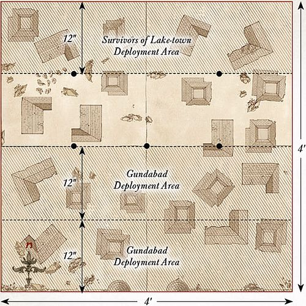
APPENDIX - THE BATTLE OF FIVE ARMIES
LAYOUT
The board represents the plains before Erebor – there should be a few scattered rocks and scrubland dotted around (not too much as there are a lot of models in this scenario!). The eastern board edge represents the walls of Erebor, with the center marking the gates of Erebor.
STARTING POSITIONS
The Evil player deploys the Signal Tower as shown on the map, with Azog and all seven of his Lieutenants within 3" of it. They then deploy the Gundabad Orc Captains, Gundabad Orcs, Gundabad Trolls, Ogres, and Catapult Troll between 12" and 36" of the western board edge. The Good player then deploys Dáin and the Iron Hills Dwarves in the eastern half of the board within 12" of the center. They then deploy Thranduil and the Mirkwood Elves between 12" and 24" of the eastern board edge. Finally, the Good player deploys the members of Thorin's Company within 6" of the gates of Erebor. All other models are kept to one side.
OBJECTIVES
The game lasts until one force has been reduced to 25% of its starting numbers. There are five main objectives that both sides are trying to achieve. Whichever side achieves the most objectives is the winner:
- Azog: If Azog has been slain at the end of the battle, the Good player achieves this objective. If Azog is alive at the end of the battle, the Evil player achieves this objective.
- Thorin: If Thorin has been slain at the end of the battle, the Evil player achieves this objective. If Thorin is alive at the end of the battle, the Good player achieves this objective.
- Thranduil: If Thranduil moves off the western board edge to reach Dale, the Good player achieves this objective. If not, the Evil player achieves this objective.
- The Battlefield: At the end of the game, whichever force has the most models within 6" of the center of the board achieves this objective.
- Strength of Numbers: Whichever force reduces their opponent to 25% of their starting number first achieves this objective.
SPECIAL RULES
- Forth from Gundabad
At the end of the Evil player's fifth Move phase, the Evil player moves Bolg, the Gundabad Berserkers, the Goblin Mercenaries, and the War Bats onto the board from any point on the northern board edge that is within 36" of the western board edge.
- The Eagles are Coming
At the end of the Good player's seventh Move phase, the Good player moves Radagast, Gwaihir, and the Great Eagles onto the board from any point on the northern board edge.
- Beorn
Beorn enters the board as a passenger on the back of any of the Great Eagles (not Gwaihir or the one carrying Radagast) and follows the normal rules for passengers, with the exception that Beorn may both Move and Charge on the turn he dismounts. Beorn may not transform into a bear while mounted upon the eagle, but will automatically transform as soon as he dismounts.
PARTICIPANTS
GOOD
Erebor Reclaimed: Thorin Oakenshield, King Under the Mountain; Kíli the Dwarf, Champion of Erebor; Fíli the Dwarf, Champion of Erebor; Balin the Dwarf, Champion of Erebor; Dwalin the Dwarf, Champion of Erebor; Bifur the Dwarf, Champion of Erebor; Bofur the Dwarf, Champion of Erebor; Bombur the Dwarf, Champion of Erebor; Ori the Dwarf, Champion of Erebor; Nori the Dwarf, Champion of Erebor; Dori the Dwarf, Champion of Erebor; Óin the Dwarf, Champion of Erebor; Glóin the Dwarf, Champion of Erebor.
The Iron Hills: Dáin Ironfoot, Lord of the Iron Hills on war boar; Iron Hills Captain; Iron Hills Captain with Mattock; 36 Iron Hills Dwarves: 12 with spear, 12 with mattock, 12 with crossbow; Iron Hills Chariot.
Halls of Thranduil: Thranduil, King of the Woodland Realm on Elk; 2 Mirkwood Elf Captains; 36 Mirkwood Elves: 12 with shield, 12 with Elven-made glaive, 12 with Elf bow.
Radagast's Alliance: Beorn; Radagast the Brown on Great Eagle; Gwaihir; 4 Great Eagles.
EVIL
Azog's Legion: Azog with heavy armor, stone flail, and Signal Tower; Bolg; 5 Gundabad Orc Captains with shield; 2 Goblin Mercenary Captains; 60 Gundabad Orcs: 30 with shield, 30 with spear; 2 Gundabad Trolls with crushing club; 2 Gundabad Trolls with scythe gauntlets; Troll Brute; 6 Gundabad Ogres; 24 Gundabad Berserkers; 24 Goblin Mercenaries; 6 War Bats; Catapult Troll.
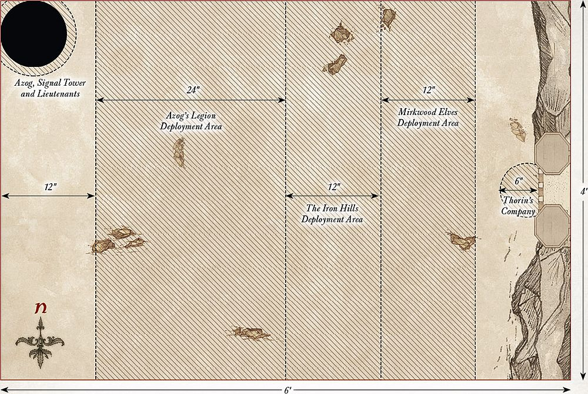
APPENDIX - THE HIGH PASS
LAYOUT
The board represents one of the many roads that runs from the Misty Mountains to the forest of Mirkwood. There should be a 6" wide road running across the center of the board from east to west. The rest of the board should be littered with plenty of trees, bushes, hedges, rocky outcrops, and other scatter terrain to provide many different routes for the Orcs.
STARTING POSITIONS
The Evil player deploys their force within 12" of the center of the western board edge. The Good player then deploys the Beornings within 12" of the center of the eastern board edge. Beorn is deployed touching the center of the northern board edge, while Grimbeorn is deployed touching the center of the southern board edge.
OBJECTIVES
The Beornings have tasked themselves with keeping the roads around their home clear of evil beings, and the Orcs will have to make their way past Beorn and his people if they are to reach Dol Guldur.
The game lasts until one force completes their objective. The Evil player wins if 12 or more Evil models can escape the board via the eastern board edge. The Good player wins if they can kill enough Evil models to prevent this from happening.
SPECIAL RULES
- Thick Fog
Models cannot see, and therefore cannot shoot, enemy models that are further than 12" away. Additionally, if a model wishes to shoot or charge a model that is over 6" away, they must first roll a D6. On a 4+, they may act as normal; however, on the roll of a 1-3, they cannot see the model and so cannot shoot or charge the selected model but may otherwise act as normal, even rolling to see if they can see a different model if they wish.
PARTICIPANTS
Good: Beorn; Grimbeorn; 12 Beornings: 8 with hand-and-a-half axe, 4 with great bow.
Evil: 3 Orc Captains with shield; 36 Orc Warriors: 12 with shield, 12 with spear, 6 with two-handed weapon, 6 with Orc bow.
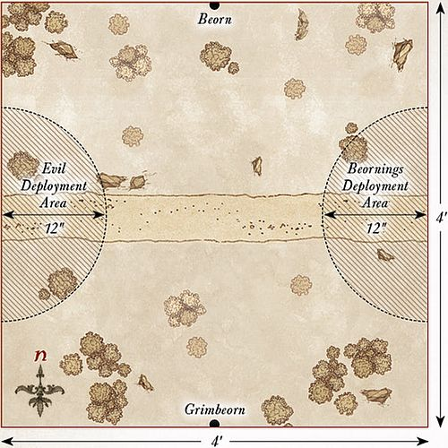